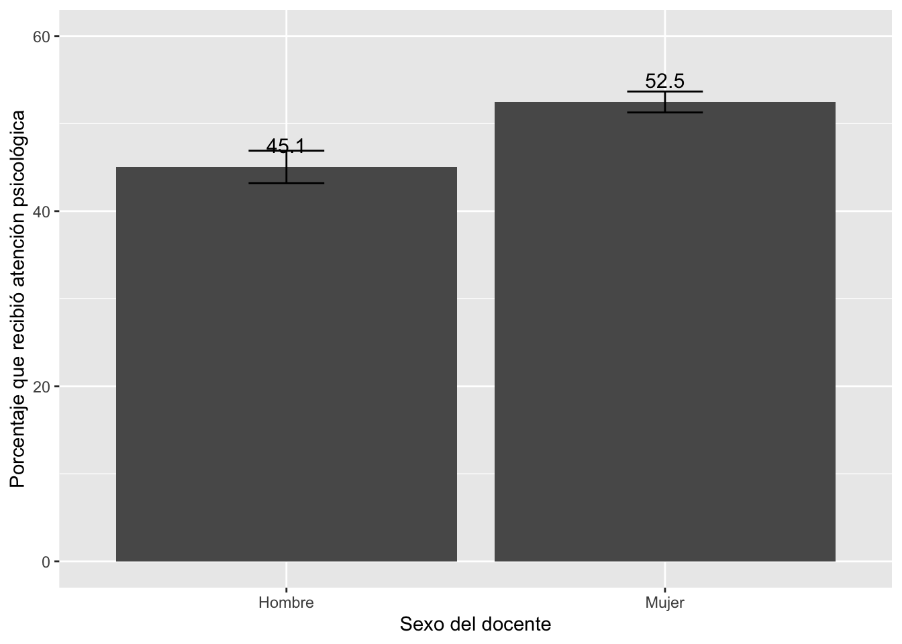

Caso 1: Efectivos en las Comisarias del Perú
Pregunta: ¿los policías en el Perú están distribuidos
equitativamente entre las comisarías del Perú?
¿Cómo cree que es esta distribución de datos?
Para responder a esta pregunta se usa la base de datos de comisarías
del Perú de 2017. Esta base de datos está disponible en la sección Microdatos del
INEI.
library(rio)
comi17 = import("bases/comi2017.sav")
Esta base de datos incluye la pregunta sobre el número total de
efectivos en cada comisaría. Esta variable se importa en R como una
variable numérica, y efectivamente es el tipo de variable correcto.
class(comi17$INF110_TOT)
## [1] "numeric"
Como esta es una variable numérica, se puede describir mediante la
media y la mediana.
¿Qué nos indican estos resultados?
library(tidyverse)
comi17 |>
summarise(Mínimo = min(INF110_TOT),
Mediana = median(INF110_TOT),
Promedio = mean(INF110_TOT),
Máximo = max(INF110_TOT))
## Mínimo Mediana Promedio Máximo
## 1 3 19 31.61538 259
Se puede graficar la distribución del número de efectivos por
comisarias mediante un histograma. ¿Qué nos indica el gráfico?
library(ggplot2)
ggplot(comi17, aes(x=INF110_TOT))+
geom_histogram()+
xlab("Número de efectivos") +
ylab("Frecuencia")+
theme_light()
## `stat_bin()` using `bins = 30`.
## Pick better value with
## `binwidth`.

Se puede incluir el dato de la media y la mediana en este gráfico.
¿Cómo se interpreta la posición relativa de ambas medidas?
ggplot(comi17, aes(x=INF110_TOT))+
geom_histogram()+
geom_vline(xintercept = 19, color = "red")+
geom_vline(xintercept = 31.6, color = "green")+
xlab("Número de efectivos") +
ylab("Frecuencia")+
theme_light()
## `stat_bin()` using `bins = 30`.
## Pick better value with
## `binwidth`.

Ahora se quiere ver si existen diferencias en el número promedio de
efectivos policiales en las comisarías del Perú entre departamentos o
entre regiones. A pesar que en formulario se recoge el dato de
Departamento, Provincia y Distrito, en la base de datos no se cuenta con
esa información. Lo que se tiene es una variable llamada “ubigeo”. Esta
variable está estandarizada de tal manera que los dos primeros dígitos
corresponden al departamento, los segundos dos dígitos a las provincias
y los últimos dos dígitos al distrito. Por lo tanto, para saber en qué
departamento está la comisaría se requiere separar los primeros dos
dígitos y guardarlos en una nueva variable.
comi17 <- comi17 %>%
mutate(dpto = str_sub(UBIGEO, 1, 2))
Copiamos el código usado para el voto 2016 y lo adaptamos a las
necesidades de esta base de datos. La variable “dpto” es una variable de
tipo “character” y sabemos que va desde el “01” al “25”, representando
cada “número” un departamento del Perú, que hemos asociado a Costa = 1,
Sierra = 2 o Selva = 3.
Entonces lo que tenemos que hallar es el código ubigeo de cada
departamento y reemplazarlo por el nombre del departamento en el código
original. La clasificación la guardamos en otra variable “region”.
comi17 = comi17 %>%
mutate(region = case_when(
dpto=="01"~3,
dpto=="02"~2,
dpto=="03"~2,
dpto=="04"~2,
dpto=="05"~2,
dpto=="06"~2,
dpto=="08"~2,
dpto=="07"~1,
dpto=="09"~2,
dpto=="10"~3,
dpto=="11"~1,
dpto=="12"~2,
dpto=="13"~1,
dpto=="14"~1,
dpto=="15"~1,
dpto=="16"~3,
dpto=="17"~3,
dpto=="18"~1,
dpto=="19"~2,
dpto=="20"~1,
dpto=="21"~2,
dpto=="22"~3,
dpto=="23"~1,
dpto=="24"~1,
dpto=="25"~3
))
Esta variable “region” es de tipo numérico, pero los códigos (1, 2 y
3) no son números, sino códigos para Costa, Sierra y Selva, por lo que
tenemos que crear otra variable, “region2” que sea de tipo “factor” con
las etiquetas correspondientes.
library(forcats)
comi17 = comi17 %>%
mutate(region2 = factor(region, labels=c("Costa", "Sierra", "Selva")))
Podemos usar esta variable para calcular los descriptivos del número
de efectivos por región. ¿Qué conclusión saca de la tabla?
tabla1 = comi17 %>%
group_by(region2) %>%
summarise(Mínimo = min(INF110_TOT),
Mediana = median(INF110_TOT),
Promedio = mean(INF110_TOT),
Desv = sd(INF110_TOT),
Máximo = max(INF110_TOT))
tabla1
## # A tibble: 3 × 6
## region2 Mínimo Mediana Promedio Desv Máximo
## <fct> <dbl> <dbl> <dbl> <dbl> <dbl>
## 1 Costa 4 28 44.3 38.3 259
## 2 Sierra 3 16 24.2 24.8 190
## 3 Selva 4 16 24.0 26.5 165
Esta tabla sirve para comparar los datos descriptivos por grupos de
otra variable. Algo similar se puede hacer con el gráfico de cajas, pero
comparando medianas y rangos intercuartiles.
ggplot(comi17, aes(y=INF110_TOT, x=region2))+
geom_boxplot()+
ylab("Número de efectivos")+
xlab("Región")+
theme_get()

Caso 2: Servicios básicos en las comisarías del Perú
Pregunta: ¿Las comisarías del Perú cuentan con los servicios
básicos? ¿Cuentan con internet?
Para responder estas preguntas, la Encuesta Nacional de Comisarías de
2017 tiene otro módulo sobre infraestructura. Cargamos esa base de
datos.
comi17_2 = import("bases/comi2017_2.sav")
Esta base incluye la pregunta INF216 sobre luz eléctrica, la pregunta
INF225 sobre agua potable, la pregunta INF230 sobre desagüe y la
pregunta INF264_E sobre el servicio de internet.
En primer lugar verificamos cómo se importan las variables. Vemos que
se importan como variables numéricas. La variable sobre luz tiene
opciones Si = 1 y No = 2. Esta variable es en realidad una de tipo
factor.
class(comi17_2$INF216)
## [1] "numeric"
table(comi17_2$INF216)
##
## 1 2
## 1485 9
Se procede a crear otra variable “luz”, como la factorización de
INF216 con etiquetas Sí y No.
comi17_2 = comi17_2 %>%
mutate(luz = factor(INF216, labels=c("Sí", "No")))
Esta variable incluye algunas comisarías donde no se tiene el dato,
por lo que cuando se calcula la tabla, se filtra solo las respuestas Sí
y No. Se guarda los resultados en un objeto “tabla2”.
tabla2 = comi17_2 %>%
filter(luz == "Sí" | luz == "No") %>%
count(Luz = luz, name="Frecuencia")
tabla2
## Luz Frecuencia
## 1 Sí 1485
## 2 No 9
Se añade a este mismo objeto los porcentajes. ¿Qué conclusiones saca
de estos resultados?
tabla2 = tabla2 %>%
mutate(Porcentaje = (Frecuencia / sum(Frecuencia)*100 ))
tabla2
## Luz Frecuencia Porcentaje
## 1 Sí 1485 99.3975904
## 2 No 9 0.6024096
Se hace el mismo procedimiento con la variable sobre agua potable. En
este caso, la variable tiene cinco valores.
class(comi17_2$INF225)
## [1] "numeric"
table(comi17_2$INF225)
##
## 1 3 4 5 6
## 1424 28 30 12 1
comi17_2 = comi17_2 %>%
mutate(agua = factor(INF225, labels=c("Red pública dentro del local",
"Camión cisterna",
"Pozo",
"Río, acequia o manantial",
"Otro")))
table(comi17_2$agua)
##
## Red pública dentro del local Camión cisterna
## 1424 28
## Pozo Río, acequia o manantial
## 30 12
## Otro
## 1
Se calcula la tabla de distribución de frecuencias, con el cálculo de
los porcentajes en el mismo código. ¿Qué conclusiones saca de estos
resultados?
tabla3 = comi17_2 %>%
count(Agua = agua, name="Frecuencia") %>%
mutate(Porcentaje = (Frecuencia / sum(Frecuencia)*100 ))
tabla3
## Agua Frecuencia Porcentaje
## 1 Red pública dentro del local 1424 95.25083612
## 2 Camión cisterna 28 1.87290970
## 3 Pozo 30 2.00668896
## 4 Río, acequia o manantial 12 0.80267559
## 5 Otro 1 0.06688963
Se hace el mismo procedimiento con la variable sobre desagüe.
class(comi17_2$INF230)
## [1] "numeric"
table(comi17_2$INF230)
##
## 1 2 3 4 5
## 1394 64 28 4 5
comi17_2 = comi17_2 %>%
mutate(desague = factor(INF230, labels=c("Red pública dentro del local",
"Pozo séptico",
"Letrina",
"Otro",
"No tiene baño")))
table(comi17_2$desague)
##
## Red pública dentro del local Pozo séptico
## 1394 64
## Letrina Otro
## 28 4
## No tiene baño
## 5
¿Qué conclusiones saca de estos resultados?
tabla4 = comi17_2 %>%
count(Desague = desague, name="Frecuencia") %>%
mutate(Porcentaje = (Frecuencia / sum(Frecuencia)*100 ))
tabla4
## Desague Frecuencia Porcentaje
## 1 Red pública dentro del local 1394 93.2441472
## 2 Pozo séptico 64 4.2809365
## 3 Letrina 28 1.8729097
## 4 Otro 4 0.2675585
## 5 No tiene baño 5 0.3344482
Finalmente, se hace lo mismo para la pregunta sobre internet.
class(comi17_2$INF264_E)
## [1] "numeric"
table(comi17_2$INF264_E)
##
## 1 2 3 4
## 127 950 132 286
comi17_2 = comi17_2 %>%
mutate(internet = factor(INF264_E, labels=c("Sí, pago pendiente",
"Sí, pago al día",
"Sí, no sabe del pago",
"No cuenta con el servicio")))
table(comi17_2$internet)
##
## Sí, pago pendiente Sí, pago al día Sí, no sabe del pago
## 127 950 132
## No cuenta con el servicio
## 286
¿Qué conclusiones saca sobre estos resultados?
tabla5 = comi17_2 %>%
count(Internet = internet, name="Frecuencia") %>%
mutate(Porcentaje = (Frecuencia / sum(Frecuencia)*100 ))
tabla5
## Internet Frecuencia Porcentaje
## 1 Sí, pago pendiente 127 8.494983
## 2 Sí, pago al día 950 63.545151
## 3 Sí, no sabe del pago 132 8.829431
## 4 No cuenta con el servicio 286 19.130435
Este tipo de variables, de tipo factor, se puede visualizar con
gráficos de barras.
graf1 = ggplot(tabla5, aes(x=Internet, y=Porcentaje))+
geom_bar(stat="identity")+
geom_text(aes(label=paste(round(Porcentaje, 1))), vjust=-1, size=3)+
labs(x="Internet", y="Porcentaje")+
theme_classic()
graf1

Tarea
Calcule las tablas de distribución de frecuencias de luz y de
internet por regiones. Grafique.
Pruebas de significancia
Es una de las técnicas más usadas para el análisis en ciencias
sociales. Sirve, por ejemplo, para comparar entre grupos:
Comparar la media de ingresos de hombres y mujeres
Comparar la proporción de personas que votarán a candidato X en
Lima y en Regiones
Comparar los ingresos de profesores en la gestión pública y en la
gestión privada
La idea es comparar las estimaciones puntuales entre ambos grupos y
también poder extrapolar estas diferencias a la población.
Vamos a comenzar por comparaciones entre solo 2 grupos (por el
momento), que corresponde a una variable binaria o dicotómica, como sexo
(hombres/mujeres), ámbito (urbano/rural), gestión educativa
(pública/privada).
Para mostrar un ejemplo, vamos a usar el trabajo de (Galarza, Kogan, and Yamada 2012) que evalúa la
discriminación en el mercado laborar entre hombres y mujeres. Estos
autores enviaron CVs con exactas cualificaciones a ofertas reales de
trabajo, variando solo el nombre del aplicante, con nombres de hombres y
mujeres. La variable de respuesta es la tasa de respuesta a estos CVs,
es decir, de cuántos CVs enviados se recibió una llamada para una
entrevista.
En cualquier prueba de significancia se tiene que presentar una
hipótesis nula, que generalmente es la hipótesis de no diferencias o de
no efectos. Este trabajo parte de una idea que existe una discriminación
de género en el mercado laboral, por lo que la hipótesis nula indicaría
lo contrario. En el caso de este trabajo se tendría:
H0: Tasa de respuesta a CVs de hombres = Tasa de respuesta a CVs de
mujeres
o lo que es lo mismo
H0: Tasa de respuesta a CVs de hombres - Tasa de respuesta a CVs de
mujeres = 0
En ese trabajo se presenta el siguiente cuadro de resultados:

En la muestra total de 2,228 CVs enviados, mitad de CVs con nombres
de hombres y la otra mitad con nombres de mujeres, todos con las mismas
cualificacions, se tiene que la tasa de respuesta para los CVs de
hombres es 13.4% y para los CVs de mujeres es 11.1%.
De acuerdo a las estimaciones puntuales, efectivamente, los hombres
tienen una mayor tasa de respuesta a sus CVs que las mujeres, a iguales
cualificaciones. Esta conclusión, sin embargo, es solo para las 2,228
observaciones de la muestra. ¿Cómo extrapolar esta conclusión a la
población? ¿Toda diferencia puntual se validaría en la población?
Comparación de intervalos de confianza por grupos
Una primera forma “informal” para extrapolar las diferencias en las
estimaciones puntuales de la muestra a la población es construyendo los
intervalos de confianza para la media o para la proporción por cada uno
de los subgrupos.
En este caso, por ejemplo, significaría construir el IC de la tasa de
respuesta para hombre y mujeres.
Pregunta: ¿Se pueden construir los IC de cada grupo con los datos de
la tabla?
Cada IC sería una extrapolación del parámetro, es decir, el rango de
valores de la tasa de respuesta a los CVs de hombres para todo el
mercado laboral al 95% de confianza. Lo mismo para la tasa de respuesta
de las mujeres.
Una vez construidos los IC, se analiza si estos intervalos se cruzan
o no se cruzan. La regla de decisión “informal” es:
Si los IC de ambos grupos se cruzan, entonces no se puede afirmar
que el parámetro de un grupo sea mayor o menos que el parámetro del otro
grupo.
Si los IC de ambos grupos NO se cruzan, entonces se puede
afirmar, al 95% de confianza, que el parámetro de un grupo es
mayor/menor al parámetro del otro grupo.
Ejemplo 1 para una variable numérica: ENDO
Pregunta: ¿a cuántos alumnos en promedio atiende un profesor
peruano? ¿Existen diferencias de género?
Usando el ejemplo de la ENDO 2020, la hipótesis que se puede evaluar
es si los profesores atienden a diferente número de alumnos de acuerdo a
su sexo. Como vimos antes, las comparaciones puntuales sugieren
diferencias, donde los docentes hombres atienden a más alumnos que las
docentes mujeres.
La hipótesis cero sería:
Ho: Promedio de alumnos que acompaña un docente hombre = Promedio de
alumnos que acompaña una docente mujer.
library(rio)
endo2020 = import("bases/ENDO_REMOTO_2020.dta")
La variable P1_1 (sexo del docente) está definida originalmente como
una variable numérica (esto se puede comprobar con el código
str(endo2020$P1_1). Esta variable, sin embargo es de tipo
factor.
Se puede crear una nueva variable “sexo” con la variable transformada
y etiquetada.
library(dplyr)
library(tidyverse)
endo2020 = endo2020 |>
mutate(sexo = factor(P1_1, labels=c("Hombre", "Mujer")))
alumxsexo = endo2020 |>
group_by(sexo) |>
summarize(Media = mean(P1_6, na.rm = T),
Desv.Std = sd(P1_6, na.rm = T))
alumxsexo
## # A tibble: 3 × 3
## sexo Media Desv.Std
## <fct> <dbl> <dbl>
## 1 Hombre 52.2 60.4
## 2 Mujer 34.1 44.2
## 3 <NA> NaN NA
Se encuentra que los docentes hombres acompañan a 52 alumnos en
promedio, en comparación con las docentes mujeres que acompañan a 34
alumnos en promedio, es decir 18 alumnos menos en promedio.
Recordemos que el cálculo del intervalo de confianza de una media
es:
\[
IC = \bar{X} \pm 1.96 * \frac{s} {\sqrt{n}}
\]
Para una comparación usando los intervalos de confianza, se puede
usar el comando ciMean de la librería lsr.
Este comando regresa el límite inferior y el límite superior del
intervalo de confianza. Por lo tanto, para guardar solo el mínimo se
tiene que especificar lsr::ciMean(P1_6, na.rm=T)[1] y para
el máximo cambiaría a [2].
library(lsr)
ci_alumxsexo = endo2020 |>
group_by(sexo) |>
summarise(media = mean(P1_6, na.rm=T),
liminf = ciMean(P1_6, na.rm=T)[1],
limsup = ciMean(P1_6, na.rm=T)[2]
)
ci_alumxsexo
## # A tibble: 3 × 4
## sexo media liminf limsup
## <fct> <dbl> <dbl> <dbl>
## 1 Hombre 52.2 50.7 53.8
## 2 Mujer 34.1 33.3 34.8
## 3 <NA> NaN NA NA
El IC al 95% de confianza, el promedio de alumnos que acompañan
los docentes hombre está en el siguiente intervalo \[50.7 - 53.8\]
El IC al 95% de confianza el promedio de alumnos que acompañan
las docentes mujeres está en el siguiente intervalo \[33.3 - 34.8\]
Como ambos intervalos NO se traslapan (el mayor valor del segundo IC,
34.8 , es menor al mejor valor del primer IC, 50.7), entonces se puede
afirmar que esas diferencias se pueden extrapolar la población.
Si los IC se traslapan, entonces, no se puede afirmar que existan
diferencias en el número de alumnos que acompañan docentes hombres o
mujeres (sería un “empate técnico”).
Gráfico de IC para comparar medias
Se puede graficar ambos intervalos de confianza. Para hacer esto,
usaremos la tabla que guarda los datos de los intervalos de
confianza.
Esta tabla, sin embargo, tiene una fila de resultados para los
valores perdidos. Esta fila no tiene datos por graficar, por lo que
tenemos que eliminarla.
Los dataframes se organizan en filas y columnas. La table
“ci_alumxsexo” tiene 3 filas y 3 columnas. La tercera fila es la que no
tiene datos que graficar. Para eliminar se tiene que especificar la
tabla y con los brackets [filas, columnas] definir los
datos a eliminar [-3, ]. Se elimina con el signo “-” y como
no hay datos luego de la “,”, se indica que no se cambia ninguna
columna.
ci_alumxsexo = ci_alumxsexo[-3,]
ci_alumxsexo
## # A tibble: 2 × 4
## sexo media liminf limsup
## <fct> <dbl> <dbl> <dbl>
## 1 Hombre 52.2 50.7 53.8
## 2 Mujer 34.1 33.3 34.8
Esta tabla se puede usar para crear un gráfico que compare ambos IC
con la librería ggplot2 y con la geometría
geom_errorbar. Se agrega geom_text para
incluir el “texto” con los valores promedio de ambos grupos.
library(ggplot2)
graf1 = ggplot(ci_alumxsexo, aes(x=sexo, y=media))+
geom_bar(stat="identity")+
geom_errorbar(aes(ymin=liminf, ymax=limsup), width=0.2)+
geom_text(aes(label=paste(round(media, 1))), vjust=-1, size=4)+
xlab("Sexo del docente") + ylab("Alumnos atendidos")+
ylim(0, 60)
graf1

En este gráfico queda más claro que ambos IC no se traslapan por lo
que se puede decir que sí existen diferencias entre docentes hombre y
mujeres en el número de alumnos que acompañan en el Perú.
Este tipo de gráfico es bastante usual en los reportes estadísticos.
Por ejemplo, se pueden ver este tipo de gráficos en los reportes de El
Pulso de la Democracia del proyecto LAPOP. En el último reporte para
Perú se presenta el siguiente gráfico que muestra los niveles de
satisfacción con la democracia entre grupos de satisfacción con los
servicios públicos. Estos gráficos son construidos de la misma manera
que se ha construido el gráfico de arriba.

¿Por qué?. .. Aquí viene la interpretación del politólogo .
OJO: no se debe confundir este gráfico con un gráfico de cajas.
TAREA: Analizar si existen diferencias en el número de alumnos entre
docentes con diferentes condiciones laborales (P1_7).
Ejemplo 2 para una variable numérica: LAPOP
library(rio)
lapop = import("bases/PER_2006-2021.dta")
Ejemplo para variable numérica con índice aditivo
El cuestionario de LAPOP incluye dos preguntas sobre las fuerzas del
orden. B12. ¿Hasta qué punto tiene usted confianza en las Fuerzas
Armadas? y B18. ¿Hasta qué punto tiene usted confianza en la policía
nacional?
Ambas preguntas están medidas en una escala de 1 a 7, donde 1
significa “Nada” y 7 significa “Mucho”. Una persona que tenga
desconfianza de las fuerzas del orden en general, seguramente reportará
puntajes bajos en ambas preguntas. Por el contrario, una persona que
tenga alta confianza en las fuerzas del orden en general, puede reportar
puntajes altos en ambas preguntas.
Se pueden combinar ambas preguntas para generar un índice aditivo de
confianza general en las fuerzas del orden, como la suma de ambas. Como
cada pregunta puede ser respondida entre 1 y 7, la suma puede variar
entre 2 y 14. Un puntaje de 2 expresará la más baja confianza en las
fuerzas del orden. Un puntaje de 14, la más alta confianza en las
fuerzas del orden. Cualquier puntaje intermedio, expresará una confianza
intermedia.
Como NO es intuitivo tener un índice que varíe entre 2 y 14, se puede
restar dos a la suma para que el índice varíe entre 0 y 12. Como esta
variación tampoco es intuitiva, se puede dividir todo entre 12 para que
el índice varíe entre 0 y 1.
| Persona con mucha desconfianza en las fuerzas del orden |
1 |
1 |
2 |
0 |
0 |
0 |
| Persona con mucha confianza en las fuerzas del orden |
7 |
7 |
14 |
12 |
1 |
100 |
| Persona con confianza media en las fuerzas del orden |
4 |
5 |
9 |
7 |
0.58 |
58 |
| Persona con confianza media en las fuerzas del orden |
6 |
4 |
10 |
8 |
0.66 |
66 |
De esta manera cada persona tiene un puntaje que puede variar entre 0
y 1, dependiendo de las respuestas que dio a cada una de las preguntas
individuales.
Esto se puede calcular en R.
library(dplyr)
lapop = lapop |>
mutate(indice = (b12+b18-2)/12*100)
Podemos asumir que este índice es una variable cuantitativa, por lo
que podemos calcular la media y el intervalo de confianza de la
media.
library(lsr)
lapop |>
summarise(media = mean(indice, na.rm=T),
liminf = ciMean(indice, na.rm=T)[1],
limsup = ciMean(indice, na.rm=T)[2]
)
## media liminf limsup
## 1 48.67959 48.25316 49.10602
Mejor aún, podemos calcular el índice de confianza en las fuerzas del
orden por año de la encuesta.
indicexwave = lapop |>
group_by(wave) |>
summarise(media = mean(indice, na.rm=T),
liminf = ciMean(indice, na.rm=T)[1],
limsup = ciMean(indice, na.rm=T)[2]
)
indicexwave
## # A tibble: 8 × 4
## wave media liminf limsup
## <dbl> <dbl> <dbl> <dbl>
## 1 2006 46.1 44.9 47.4
## 2 2008 45.5 44.2 46.7
## 3 2010 47.4 46.3 48.6
## 4 2012 46.1 45.0 47.2
## 5 2014 45.6 44.4 46.8
## 6 2016 53.5 52.6 54.4
## 7 2018 51.1 49.9 52.3
## 8 2021 55.5 52.9 58.2
Con lo que podemos comparar el índice de apoyo a las fuerzas del
orden por año para sacar conclusiones acerca de diferencias.
library(ggplot2)
graf3 = ggplot(indicexwave, aes(x=wave, y=media))+
geom_bar(stat="identity")+
geom_errorbar(aes(ymin=liminf, ymax=limsup), width=0.2)+
geom_text(aes(label=paste(round(media, 1))), vjust=-1, size=4)+
xlab("Año de encuestas") + ylab("Índice de confianza en las fuerzas del orden")+
ylim(0, 60)
graf3

Ejemplo 1 para una variable categórica: ENDO
Siguiendo con el ejemplo de la ENDO 2020, la hipótesis que se puede
evaluar es si existen diferencias en si los docentes han recibido apoyo
psicológico o emocional por sexo (P1_13).
La hipótesis cero sería: La proporción de docentes que han recibido
apoyo psicológico entre docentes hombres = Proporción de docentes que
han recibido apoyo psicológico entre docentes mujeres.
Lo primero es transformar la variable P1_13 que es importada como
numérica, como una variable de factor y con sus etiquetas.
endo2020 = endo2020 |>
mutate(apoyo = factor(P1_13, labels=c("Sí", "No")))
Ahora tenemos que producir la tabla de distribución de frecuencias.
Si calculamos las frecuencias con count directamente, esta
tabla incluiría una fila de los NAs y luego calculará los porcentajes
incluyendo a este grupo. Es por esto que antes de calcular las
frecuencias, tenemos que filtrar para que solo cuente los “Sí” y “No”.
Luego de las frecuencias, incluimos el porcentaje con
mutate.
tabla = endo2020 |>
filter(apoyo =="Sí" | apoyo == "No") |>
count(Apoyo = apoyo, name="N")|>
mutate(total = sum(N),
Por = N / total * 100)
tabla
## Apoyo N total Por
## 1 Sí 9476 18930 50.05811
## 2 No 9454 18930 49.94189
Por ejemplo, para hallar el IC de la proporción de aquellos docentes
que reportaron haber recibido apoyo psicológico, podemos usar el comando
prop.test. Este comando requiere el n de la opción “Sí” de
la tabla y el total de casos. Por defecto nos calcula el IC al 95% de
confianza.
prop.test(9476,18930)
##
## 1-sample proportions test with continuity correction
##
## data: 9476 out of 18930, null probability 0.5
## X-squared = 0.023296, df = 1, p-value = 0.8787
## alternative hypothesis: true p is not equal to 0.5
## 95 percent confidence interval:
## 0.4934326 0.5077293
## sample estimates:
## p
## 0.5005811
Se estima que el la proporción de docentes que recibieron apoyo
psicológico está entre 49.3% y 50.8%.
Luego, para responder a la pregunta de si esta proporción varía entre
docentes hombres y mujeres, tenemos que crear otra tabla con las
frecuencias y porcentajes por cada grupo de la variable “sexo”. Para
esto, al código anterior le agregamos el comando
group_by.
tabla2 = endo2020 |>
filter(apoyo =="Sí" | apoyo == "No") |>
group_by(sexo) |>
count(Apoyo = apoyo, name="N")|>
mutate(total = sum(N),
Por = N / total * 100,
err = sqrt(Por*(100-Por)/N),
liminf = Por - 1.96*err,
limsup = Por + 1.96*err)
tabla2
## # A tibble: 4 × 8
## # Groups: sexo [2]
## sexo Apoyo N total Por err liminf limsup
## <fct> <fct> <int> <int> <dbl> <dbl> <dbl> <dbl>
## 1 Hombre Sí 2777 6163 45.1 0.944 43.2 46.9
## 2 Hombre No 3386 6163 54.9 0.855 53.3 56.6
## 3 Mujer Sí 6699 12767 52.5 0.610 51.3 53.7
## 4 Mujer No 6068 12767 47.5 0.641 46.3 48.8
El mismo comando prop.test permite hacer la prueba para
la diferencia de proporciones. Para esto, los valores tanto de hombres,
como de mujeres, se concatenan con la especificación c(…),
tanto para el n de “Sí” de cada grupo, como para el total de casos de
cada grupo.
prop.test(c(2777, 6699), c(6163,12767))
##
## 2-sample test for equality of proportions with continuity correction
##
## data: c(2777, 6699) out of c(6163, 12767)
## X-squared = 91.044, df = 1, p-value < 2.2e-16
## alternative hypothesis: two.sided
## 95 percent confidence interval:
## -0.08938432 -0.05885549
## sample estimates:
## prop 1 prop 2
## 0.4505922 0.5247121
Según los resultados, se encuentra que el 52.5% de docentes mujeres
recibieron apoyo psicológico versus el 45.1% de docentes hombres. Este
comando no nos brinda directamente los límites inferior y superior de
los IC de cada grupo, pero nos brinda el IC de la diferencia de
proporciones al 95% de confianza. Este IC de la diferencia de
proporciones varía entre -8.9% y -5.9%.
Como este IC va solo entre valores negativos; es decir, como el IC no
incluye al cero, se puede concluir que la diferencia de proporciones no
puede ser cero, por lo tanto, que existe una diferencia estadísticamente
significativa en las proporciones entre ambos grupos.
La tabla 2 se puede usar para graficar. Como nos interesa comparar
los porcentajes de docentes que reportaron haber recibido atención
psicológica por sexo, se puede eliminar las filas de aquellos que no
recibieron atención psicológica en la tabla 2.
tabla2 = tabla2[-c(2,4),]
Luego, con esta tabla podemos seguir el mismo procedimiento que con
el cálculo de las barras de error para la media, pero esta vez para los
porcentajes.
graf2 = ggplot(tabla2, aes(x=sexo, y=Por))+
geom_bar(stat="identity")+
geom_errorbar(aes(ymin=liminf, ymax=limsup), width=0.2)+
geom_text(aes(label=paste(round(Por, 1))), vjust=-1, size=4)+
xlab("Sexo del docente") + ylab("Porcentaje que recibió atención psicológica")+
ylim(0, 60)
graf2

De este gráfico se puede concluir que existen diferencias
estadísticamente significativas en el porcentaje de docentes que
buscaron atención psicológica entre hombres y mujeres, debido a que los
intervalos de confianza no se traslapan.
De manera más específica, se puede afirmar que las docentes peruanas
reciben más atención psicológica que los docentes hombres.
Ejemplo para variable categórica
En la página 21 del reporte Cultura política de la democracia en
Perú y en las Américas 2021: Tomándole el pulso a la democracia se
presenta el gráfico que muestra el porcentaje de apoyo a la democracia
en Perú (línea magenta) a lo largo del tiempo, en comparación con
América Latina (línea morada).
El apoyo a la democracia, variable “ING4”, está medida en una escala
del 1 al 7, donde 1 significa “muy en desacuerdo” y 7 significa “muy de
acuerdo”. Esta variable se tiene que recodificar. De acuerdo al reporte
“Las respuestas van de 1 (muy en desacuerdo) a 7 (muy de acuerdo). Para
este análisis, se codificaron las respuestas en el extremo”de acuerdo”
de la escala (valores que van de 5 a 7) como apoyo a la democracia.”
(p.7).

Para recodificar la variable se usa el siguiente código. El resultado
es una variable dicotómica (0=No, 1=Sí), que es una variable categórica,
aunque incluye un grupo que no tiene respuesta en esta variable y está
como NAs.
lapop = lapop |>
mutate(ing4rec=recode(ing4, '5' = 1, '6' = 1, '7' = 1, .default = 0))
Se verifica la recodificación.
lapop |>
count(ing4, name="Frecuencia")
## ing4 Frecuencia
## 1 1 768
## 2 2 885
## 3 3 1811
## 4 4 3095
## 5 5 3349
## 6 6 2284
## 7 7 2121
## 8 NA 393
Lo que queremos es encontrar el intervalo de confianza de la
proporción (o porcentaje) de aquellos que responden “Sí” (las 7754
personas con un 1). Ojo que la tabla muestra a 393 personas con NAs.
lapop |>
count(ing4rec, name="Frecuencia")
## ing4rec Frecuencia
## 1 0 6559
## 2 1 7754
## 3 NA 393
Y queremos calcular el porcentaje de aquellos que responden “Sí” por
año de la encuesta. La variable que registra el año de la encuesta es
“wave”. Esta variable se carga como una numérica (por este motivo, en el
gráfico anterior el eje X del gráfico aparece como una variable
continua) y se tiene que transformar a una de factor llamada
“ronda”.
lapop = lapop |>
mutate(ronda = factor(wave))
Se calcula el apoyo a la democracia por años. Para el cálculo de esta
tabla queremos excluir a aquellos que no tienen respuesta en la variable
apoyo a la democracia (los 393 NAs anteriores). Esto lo podemos hacer
con el comando filter, donde especificamos que solo
queremos calcular los porcentajes de aquellos que respondieron No (o 0
en la variable) y aquellos que respondieron Sí (o 1 en la variable).
En cada grupo se quiere calcular el intervalo de confianza de la
proporción. Recuerden que la fórmula que se tiene que usar es la de
intervalos de confianza de la proporción.
Dentro del comando mutate calculamos el total en cada
grupo (total), la proporción (Por), el error estándar (err que es igual
a la raíz cuadrada del porcentaje por 100-porcentaje entre N) y el
límite inferior y superior del intervalo de confianza.
tabla3 = lapop |>
filter(ing4rec ==0 | ing4rec == 1) |>
group_by(ronda) |>
count(Apoyo = ing4rec, name="N")|>
mutate(total = sum(N),
Por = N / total * 100,
err = sqrt(Por*(100-Por)/N),
liminf = Por - 1.96*err,
limsup = Por + 1.96*err)
tabla3
## # A tibble: 16 × 8
## # Groups: ronda [8]
## ronda Apoyo N total Por err liminf limsup
## <fct> <dbl> <int> <int> <dbl> <dbl> <dbl> <dbl>
## 1 2006 0 663 1422 46.6 1.94 42.8 50.4
## 2 2006 1 759 1422 53.4 1.81 49.8 56.9
## 3 2008 0 541 1443 37.5 2.08 33.4 41.6
## 4 2008 1 902 1443 62.5 1.61 59.3 65.7
## 5 2010 0 693 1439 48.2 1.90 44.4 51.9
## 6 2010 1 746 1439 51.8 1.83 48.3 55.4
## 7 2012 0 589 1461 40.3 2.02 36.4 44.3
## 8 2012 1 872 1461 59.7 1.66 56.4 62.9
## 9 2014 0 593 1434 41.4 2.02 37.4 45.3
## 10 2014 1 841 1434 58.6 1.70 55.3 62.0
## 11 2016 0 1261 2596 48.6 1.41 45.8 51.3
## 12 2016 1 1335 2596 51.4 1.37 48.7 54.1
## 13 2018 0 759 1496 50.7 1.81 47.2 54.3
## 14 2018 1 737 1496 49.3 1.84 45.7 52.9
## 15 2021 0 1460 3022 48.3 1.31 45.7 50.9
## 16 2021 1 1562 3022 51.7 1.26 49.2 54.2
La tabla muestra los datos de los que no apoyan a la democracia
(filas donde Apoyo=0) y de los que sí apoyan a la democracia (filas
donde Apoyo=1) por cada ronda.
Como solo se quiere graficar a los que sí apoyan a la democracia, se
deben eliminar todas las filas impares.
tabla3 = tabla3[-c(1,3,5,7,9,11,13,15),]
tabla3
## # A tibble: 8 × 8
## # Groups: ronda [8]
## ronda Apoyo N total Por err liminf limsup
## <fct> <dbl> <int> <int> <dbl> <dbl> <dbl> <dbl>
## 1 2006 1 759 1422 53.4 1.81 49.8 56.9
## 2 2008 1 902 1443 62.5 1.61 59.3 65.7
## 3 2010 1 746 1439 51.8 1.83 48.3 55.4
## 4 2012 1 872 1461 59.7 1.66 56.4 62.9
## 5 2014 1 841 1434 58.6 1.70 55.3 62.0
## 6 2016 1 1335 2596 51.4 1.37 48.7 54.1
## 7 2018 1 737 1496 49.3 1.84 45.7 52.9
## 8 2021 1 1562 3022 51.7 1.26 49.2 54.2
Ahora, tenemos los datos para graficar.
graf4 = ggplot(tabla3, aes(x=ronda, y=Por))+
geom_bar(stat="identity")+
geom_errorbar(aes(ymin=liminf, ymax=limsup), width=0.2)+
geom_text(aes(label=paste(round(Por, 1))), vjust=-1, size=4)+
xlab("Ronda") + ylab("Porcentaje que apoya a la democracia")+
ylim(0, 70)
graf4

Nota final
La comparación de IC, ya sea calculando los valores para cada grupo o
ya sea de manera gráfica, es una primera manera de analizar si las
diferencias entre grupos se pueden extrapolar a la población.
Pero esta es una manera “informal” de hacer esta comparación. Para
formalizar esta comparación existe una prueba estadística llamada prueba
t de diferencias de medias o la prueba de proporciones, que se verán en
la siguiente sesión.
Bibliografía
Galarza, Francisco, Liuba Kogan, and Gustavo Yamada. 2012.
“Detectando Discriminación Sexual y Racial En El Mercado Laboral
de Lima.” In Chapters of
Books, 1:103–35. Fondo Editorial, Universidad
del Pacífico.
